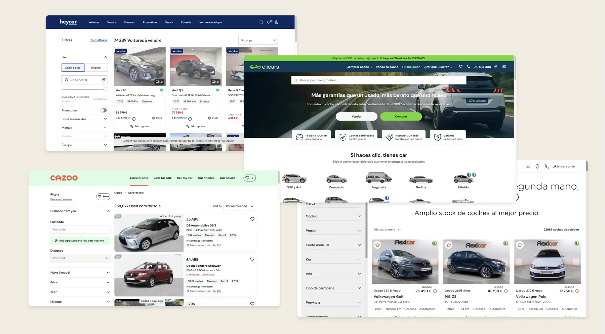
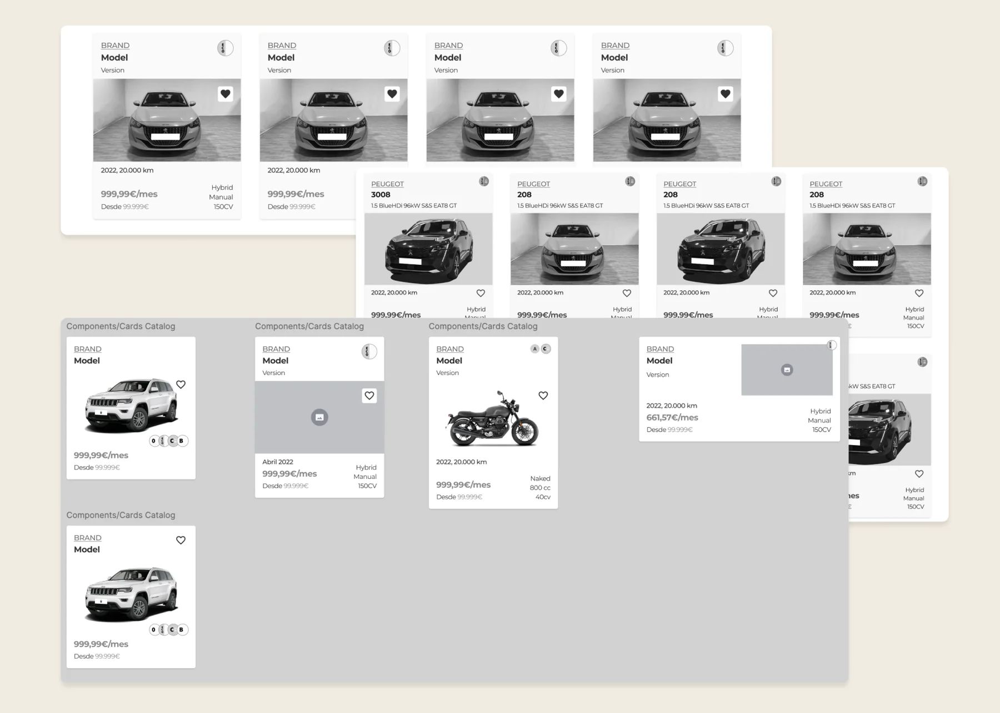
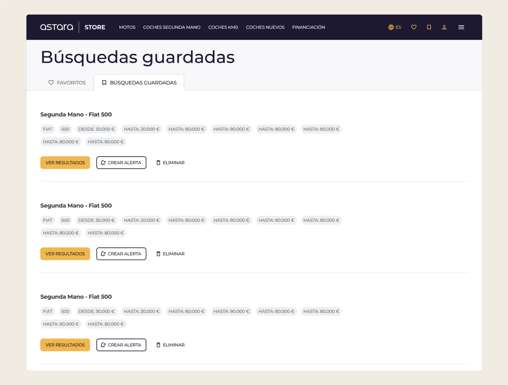
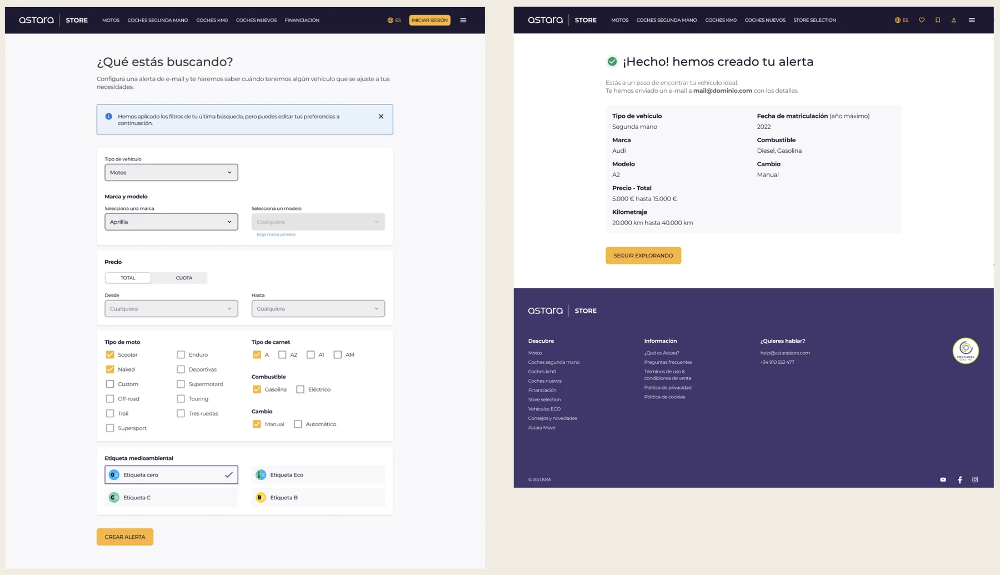

Alerts, favourites and saved searches
Improving search and discovery in a car and motorbike marketplace with three key features.

Context
Astara Store was an online marketplace for cars and motorbikes.

The challenge
My main goal was to improve that search and discovery experience.
To achieve it, we focused on researching and designing these three key features:
Research
I started the research by analysing the competition. I focused on how other car websites integrated their Favourites, Saved searches and Alerts, to learn from their solutions and best practices.

I worked with my Product Owner in a whiteboarding session to map out these flows. The goal was to validate a V1 and make sure we were aligned before starting the visual design.

Ideation
- With the user flows approved, I started translating them into low-fidelity wireframes.
- At Astara we had a greyscale UI kit that allowed me to build and test these structures quickly.


The goal was to find a single solution that felt intuitive and worked seamlessly across all card variants.
The solution
♥ Favourites
This was the solution I found to ensure consistency across every card layout for each vehicle type.

Dedicated “Favourites” page
- To give users a central place to manage what they find, I designed this dedicated “Favourites” page, which also includes their “Saved searches”.
- Another decision was to automatically group items by vehicle type. This helps users stay organised and easily compare the options they’re considering.

🔎 Saved searches
- To solve the problem of repetitive work, I designed the “Saved searches” tab, where users can repeat complex searches with a single click.
- The key feature here is the “Create alert” button. It acts as an intuitive bridge that lets users easily turn a passive saved search into a proactive, automatic alert.

🔔 Alerts
- To make the “Alerts” feature powerful and easy to find, I designed two main entry points to create them.
- Users can create an alert directly from a search results page or from their list of previously saved searches.

Alert creation form
- For the “Create alert” form, I made the deliberate decision to simplify the experience without including every possible filter.
- In collaboration with my Product Owner, we identified and prioritised only the most essential filters needed to create a meaningful alert.
- This reduces complexity for the user and makes the process much faster and less overwhelming.

Email notifications
The “Alerts” experience goes beyond the website and reaches the user’s inbox. A crucial last step was designing the complete email notification system.

Quick login and sign-up
- To enable these new personalisation features, users first needed an account. This required designing a quick and smooth login and sign-up flow.
- The goal was to make this step as frictionless as possible, appearing in context when the user tries to save a vehicle or a search for the first time.